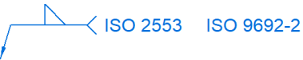

General tab (Weld Symbol Properties dialog box)
Specifies the content and layout of the weld symbol. The user interface in this dialog box is determined by the active Weld Symbols standard.
You can set the Weld Symbols standard on the Drawing Standards tab in the Solid Edge Options dialog box. The standards that are available are ANSI/ISO/DIN or GOST. The GB drawing standard uses the ANSI/ISO/DIN weld symbols. The ESKD drawing standard uses the GOST weld symbols.
As you define a weld symbol, the Preview pane shows how it will appear when placed on the model.

- Saved settings
-
Specifies the name for a new saved setting. Selecting the arrow lists the previously saved settings.
Saved settings enable you to save content and formatting properties. You can apply saved settings to quickly format new weld symbols and to modify existing weld symbols.
- Save
-
Saves the information currently displayed in the weld symbol parameter boxes on the General tab to the name displayed in the Saved settings box.
- Delete
-
Deletes the saved setting information associated with the name currently displayed in the Saved settings box.
Note:Saved settings are saved to text files in the ..\Program Files\Siemens\Solid Edge 2023\Template\Reports folder. This enables you to share these files with other users. The text files are named for the annotation type, for example, DraftWeld.txt.
- Show this dialog when the command begins
-
When set, displays the Weld Symbol Properties dialog box automatically when you select the Weld Symbol command. When cleared, you have to use the Properties button on the Weld Symbol command bar to open this dialog box.
The default is to show the dialog box.
ANSI/ISO/DIN weld symbol properties
To learn how to build a simple weld symbol, see Example: Define a weld symbol.

- Field/Site Symbol
-
Specifies a flag points right symbol, a flag points left symbol, or none.
- All Around Symbol
-
Specifies the all around symbol or none.
- Weld Symbol
-
When selected, displays a list of weld type symbols. After selecting the type of weld symbol from the Weld Symbol list, you can use the other weld symbol definition options to define the content and layout of the weld symbol.
 Note:
Note:There are two Weld Symbol buttons to define the top and bottom weld symbols: one above and one below the line.
- Identification Line Symbol
-
Specifies an identification line above, identification line below, or none.
- Intermittent Symbol
-
Specifies the intermittent symbol or none.
- Tail Symbol
-
Specifies an open tail, a closed tail, or no tail. Use the Tail Note 1 and Tail Note 2 boxes to define the content.

 Reset
Reset-
Clears all the text from the weld symbol boxes, and resets the lines and arrows to the default selection.
GOST weld symbol properties
The GOST weld symbol has four string input boxes. These input boxes can contain a combination of text and %XX property text codes.
After placing the cursor in one of the four input boxes, you can select the Symbols buttons and the Values buttons to insert commonly used symbols and values based on property text. You also can open the Symbols and Values dialog box to access a wider variety of symbols and values. The property text codes convert to weld symbols and weld data when the symbol is placed in the document.

- Symbols (1)
-
The buttons in this section specify the weld symbol type, as well as insert frequently used symbols such as number, diameter, plus-minus, and degree.
- Values (2)
-
The buttons in this section extract weld data, such as base thickness, bead length, number of weld beads, and pitch.
 Symbols and Values (3)
Symbols and Values (3)-
Opens the Select Symbols and Values dialog box for you to select other symbols and model-derived values without having to type the property text codes yourself.
 Reference Text (4)
Reference Text (4)-
Opens the Select Reference Text dialog box for you to insert a reference to another annotation or to a drawing view in the same document. You can insert reference text into each of the four input boxes in the GOST weld symbol.
For more information, see Create reference text.
- All Around Symbol
-
Specifies the all around symbol or none.
- Field/Site Symbol
-
Specifies a flag points right symbol, a flag points left symbol, or none.
- Terminator Symbol
-
Specifies the same side symbol, the other side symbol, or a full arrow head.
- Reset (5)
-
Clears all of the text from the weld symbol boxes, and resets the lines and arrows to the default selection.
- Permanent joint
-
Specifies how two materials are joined together. You can select the Permanent joint check box and then select the type of permanent joint symbol to embed in the leader line.
Example:

How do I
Place a weld symbolExample: Define a weld symbol
Look up more details
Weld Symbol commandWeld Symbol command bar
Weld Symbol Properties dialog box